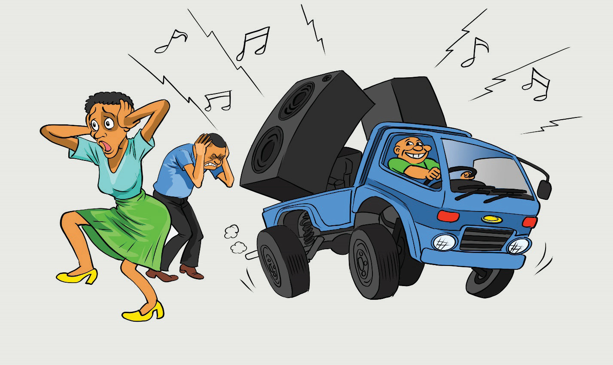
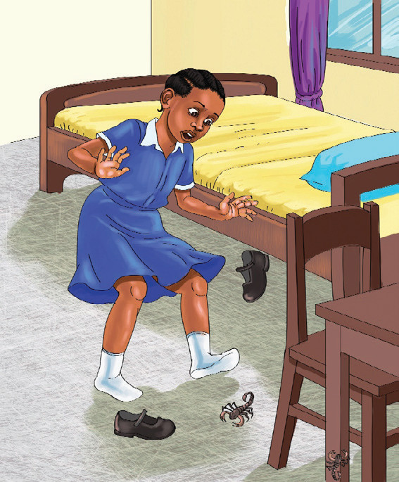

(c) Compose short stories on two of the following topics. Use phrases such as Once
upon a time…, I wonder…, What if…, Back in time…
1. The homeless dog’s secret – A lonely stray dog keeps following you home.
One day, you discover it has a special secret. What is the secret, and how does it change your life?
2. The forgotten village – Abdul discovers an old map leading to a hidden village/town that no one remembers. What mysteries lie ahead?
3. What if I woke up one day and everything had changed?
4. Back in time, people used to write letters instead of texting…
(d) Study the following pictures and identify the non-verbal cues represented. Then, write a paragraph for each picture to describe what is happening.


3
4
1
2